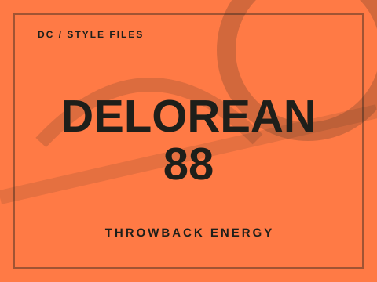
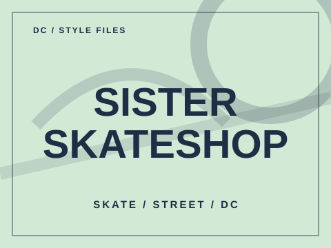

STYLE STOP 01
Joint Custody
Vintage clothing, classic sportswear, and vinyl records all under one roof. A stop for throwback pieces with personality.
1530 U St NW, Washington, DC 20009 Visit Joint Custody websiteThrowback fits, music culture, skate style, and sneaker finds worth exploring around U Street.
U Street and local style
Vintage clothing, classic sportswear, and vinyl records all under one roof. A stop for throwback pieces with personality.
1530 U St NW, Washington, DC 20009 Visit Joint Custody website
Curated vintage clothing and sneakers with a throwback streetwear focus. Worth a look if you love a nostalgic fit.
1526 U St NW, Washington, DC 20009 Find Delorean 88 on Google Maps
Local skate culture, boards, accessories, and pieces with a streetwear feel. Another easy stop on U Street.
1528 U St NW, Washington, DC 20009 Visit Sister Skateshop websiteCheck each shop’s website or map listing for current hours, location and availability. The graphics are illustrations rather than photographs of the shops.